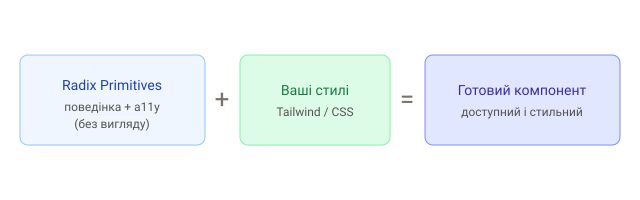

1. Ідея headless-компонентів
Radix Primitives — це бібліотека «безголових» (headless) компонентів для React. Вони беруть на себе складну частину — поведінку, керування фокусом, клавіатуру, ARIA-атрибути й доступність, — але не нав'язують жодного вигляду. Стилі повністю твої.

2. Навіщо це потрібно
Написати справді доступне випадне меню чи діалог складно: пастка фокуса, Esc, навігація стрілками, читачі екрана, кліки поза межами. Radix реалізує це правильно, а ти лише стилізуєш розмітку.
Доступність (a11y) — не «додаткова опція», а вимога якісного продукту. Самостійно правильно реалізувати клавіатуру й ARIA для складних віджетів дуже важко — саме тут headless-примітиви економлять дні роботи й уникають помилок.
3. Приклад: діалог
npm install @radix-ui/react-dialogimport * as Dialog from '@radix-ui/react-dialog';
function Modal() {
return (
<Dialog.Root>
<Dialog.Trigger>Відкрити</Dialog.Trigger>
<Dialog.Portal>
<Dialog.Overlay className="overlay" />
<Dialog.Content className="modal">
<Dialog.Title>Заголовок</Dialog.Title>
<Dialog.Description>Опис вікна</Dialog.Description>
<Dialog.Close>Закрити</Dialog.Close>
</Dialog.Content>
</Dialog.Portal>
</Dialog.Root>
);
}Класи (overlay, modal) — твої: Radix лише дає структуру й поведінку.
Пастка фокуса, Esc, клік по фону, ARIA вже працюють.
4. Патерн композиції
Radix-компоненти складаються з частин (Root, Trigger, Content…). Це дає
повний контроль над розміткою — на відміну від монолітних «чорних скриньок».
5. Які є примітиви
Dialog, Dropdown Menu, Popover, Tooltip, Tabs, Accordion, Select, Checkbox, Switch, Slider, Toast та інші — усе найскладніше для доступності.